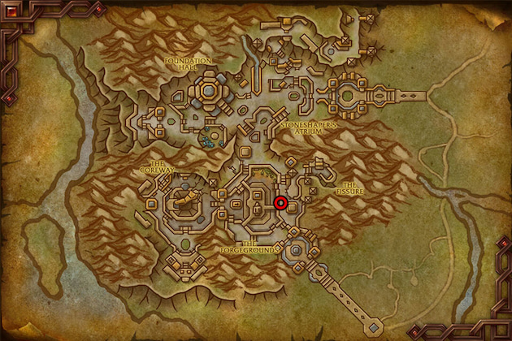
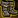
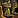
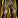
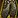
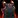
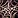
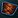
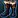

This War Within Leatherworking leveling guide will show you the fastest and cheapest way to level your War Within Leatherworking skill up from 1 to 100.
This War Within Leatherworking leveling guide will show you the fastest and cheapest way to level your War Within Leatherworking skill up from 1 to 100.
Leatherworking is best combined with skinning, and I highly recommend leveling these professions together because it will be easier to get the needed materials if you have skinning. So, check out my Skinning Leveling Guide if you want to level skinning. You can also buy the leathers at the Auction House, but you will need a lot of gold.
Leatherworking Trainer and Crafting Table
You can learn the War Within Leatherworking skill from the Leatherworking trainer in Dornogal.

Shopping list
This is the total list of materials required to reach 62. The 62-100 part is not included here because there are multiple recipes you can use you can use.
The quality doesn't matter for leveling. Buy the cheapest.
- 340x Stormcharged Leather
- 305x Gloom Chitin
- 4x Sunless Carapace
- 6x Thunderous Hide
Leveling Khaz Algar Leatherworking
First Craft Bonus
You will earn 1 Khaz Algar Leatherworking Knowledge talent point each time you craft an item for the first time. This knowledge is highly valuable and has a weekly cap from other sources.
Due to the "First Craft Bonus," I suggest crafting one mail piece and one leather piece whenever possible. It's better to receive your First Craft Bonus while also gaining skill points from them.
1 - 7
1x Spelunker's Leather Bands - 15x Stormcharged Leather, 5x Gloom Chitin
1x Tracker's Chitin Cuffs - 5x Stormcharged Leather, 15x Gloom Chitin
7 - 16
1x Hideseeker's Hat - 40x Stormcharged Leather, 40x Gloom Chitin  
1x
1x
16 - 25
1x Spelunker's Leather Jerkin - 30x Stormcharged Leather, 15x Gloom Chitin
1x Tracker's Chitin Hauberk - 15x Stormcharged Leather, 30x Gloom Chitin
1x Hideseeker's Pack - 10x Stormcharged Leather, 1x Thunderous Hide
Leatherworking Specializations
When you hit 25, you will unlock Leatherworking specializations.
You'll eventually be able to learn all four specializations, so there's no need to worry about your initial choice. You'll need 50 skill points to unlock the second specialization, 60 for the third and 75 for the fourth.
I suggest checking out my War Within Leatherworking Specialization Guide if you want some example builds to help you get started.
TWW Leatherworking Specialization Guide and Builds
25 - 35
Make these first because they turn yellow at 30.
1x Spelunker's Practiced Sash - 30x Stormcharged Leather, 10x Gloom Chitin
1x Tracker's Toughened Girdle - 10x Stormcharged Leather, 30x Gloom Chitin
Then make this one:
1x Spelunker's Practiced Mitts - 25x Stormcharged Leather, 20x Gloom Chitin
35 - 44
1x Gemcutter's Apron - 20x Stormcharged Leather, 1x Thunderous Hide
1x Apothecary's Cap - 20x Stormcharged Leather, 1x Sunless Carapace
1x Steelsmith's Apron - 20x Gloom Chitin, 1x Thunderous Hide
44 - 50
Make sure to make the Tracker's Toughened Shoulderguards first.
1x Tracker's Toughened Shoulderguards - 30x Gloom Chitin, 1x Sunless Carapace
1x Spelunker's Practiced Shoulders - 30x Stormcharged Leather, 1x Thunderous Hide
50 - 56
1x  
1x
56 - 62
1x Spelunker's Practiced Hat - 30x Stormcharged Leather, 1x Thunderous Hide
1x Tracker's Toughened Headgear - 30x Gloom Chitin, 1x Sunless Carapace
62 - 70
Check the prices which one is cheaper and make around 11 from one of them:
11x Tracker's Toughened Headgear - 330x Gloom Chitin, 11x Sunless Carapace
11x Spelunker's Practiced Hat - 330x Stormcharged Leather, 11x Thunderous Hide
Both recipe will be green for the last 3 points, so you may need to craft more.
70 - 91
If you don't have access to any of the recipes in this section, you can skip ahead to the 91-100 section. However, if you do have the recipes, I recommend crafting these items first to reach level 100 faster.
Optional Reagents and Leg Armor Kits are not Bind on Pickup (BoP), so you can sell some to recoup some of your gold. Since they don't require any BoP materials, you can easily reach level 91 if you have the necessary gold.
If you're making a profit by selling these items, feel free to craft more. Every recipe remains green until level 100.
Leg Armor Kits
| Item | Reagents | Recipe Source |
|---|---|---|
| Stormbound Armor Kit | 1x Gloomfathom Hide 2x Crystalfused Hide 60x Stormcharged Leather | Sold by Auditor Balwurz in Dornogal. Cost: 150x Artisan's Acuity |
| Defender's Armor Kit | 1x Profaned Tinderbox 2x Crystalfused Hide 60x Gloom Chitin | Sold by Lyrendal in Dornogal. Cost: 150x Artisan's Acuity |
Optional Reagents
| Item | Reagents | Recipe Source |
|---|---|---|
| Writhing Armor Banding | 1x Vial of Kaheti Oils 1x Chitin Armor Banding | Specialization: Flawless Fortes - Nerubian Nous |
| Blessed Weapon Grip | 1x Profaned Tinderbox 1x Storm-Touched Weapon Wrap | Specialization: Flawless Fortes - Arathi Armorer |
Profession Equipment
Every profession equipment gives 2 skill points until you reach level 90. Since all of them require Artisan's Acuity to craft, you'll need to use Patron, Public, or Personal crafting orders to get skill points. It would be a huge waste to use your own Artisan's Acuity for any tools you won't use.
| Item | Recipe Source |
|---|---|
| Arathi Leatherworker's Smock | Sold by Lyrendal in Dornogal. Cost: 150x Artisan's Acuity |
| Stonebound Herbalist's Pack | Sold by Lyrendal in Dornogal. Cost: 150x Artisan's Acuity |
 Earthen Forgemaster's Apron | Sold by Lyrendal in Dornogal. Cost: 150x Artisan's Acuity |
| Charged Scrapmaster's Gauntlets | Sold by Lyrendal in Dornogal. Cost: 150x Artisan's Acuity |
| Earthen Jeweler's Cover | Sold by Lyrendal in Dornogal. Cost: 150x Artisan's Acuity |
| Nerubian Alchemist's Hat | Sold by Kama in City of Threads. Cost: 150x Artisan's Acuity 1500x  Kej |
| Deep Tracker's Cap | Sold by Kama in City of Threads. Cost: 150x Artisan's Acuity 1500x Kej |
| Deep Tracker's Pack | Sold by Kama in City of Threads. Cost: 150x Artisan's Acuity 1500x Kej |
91 - 100
The Optional Reagents and Leg Armors give skill points up to 100. But, the last few point could be a bit slow if you are unlucky with the skill gains. So, if you have any of the epic armor recipes unlocked, you can try completing a few crafting orders. I'd recommend stopping at 91, 94 or 97. Each armor recipe give 3 skill points, so you would only have to complete 1-3 of them.
If you plan to craft at least one armor for yourself, you should definitely stop at 97.
Every epic armor recipe requires a Spark of Omen, a Bind on Pickup (BoP) crafting reagent that cannot be purchased from the Auction House. Since you can only obtain one Spark of Omen every two weeks, you should use the crafting order system for these last few points to level Leatherworking up to 100.
Specializations
Every recipe you can learn inside the Luxurious Leathers and Concrete Chitin specialization is will teach you an epic armor recipe that you can use for leveling.
However, in the Flawless Fortes specialization, only the Beastly Bulwarks will teach you leveling recipes. (Smoldering Pollen Hauberk and Weathered Stormfront Vest)
Recipes from Drops
These are the only recipes that give skill points without requiring a specific specialization. All other recipes are unlocked by putting points into specializations.
| Item | Recipe Source |
|---|---|
| Adrenal Surge Clasp | Drop: Sikran, Captain of the Sureki Raid: Nerub-ar Palace |
| Busy Bee's Buckle | Drop: Goldie Baronbottom Dungeon: Cinderbrew Meadery |
| Vambraces of Deepening Darkness | Drop: World Creatures |
| Roiling Thunderstrike Talons | Drop: Voidstone Monstrosity Dungeon: The Rookery |
| Sanctified Torchbearer's Grips | Quest: |
| Reinforced Setae Flyers | Delves: Heavy Trunk |
 Rook Feather Wristwraps | Drop: |
 Waders of the Unifying Flame | Drop: Prioress Murrpray Dungeon: Priory of the Sacred Flame |
Completing Crafting Orders for skill points
Once you get recipes from specializations, vendors or drops, you can start looking for Crafting Orders.
Public Orders
When you open the Crafting Orders tab, make sure to hit "Search" in the top left corner on the Public Orders tab, they won't load automatically. You probably won't see many crafting orders because players immediately complete them when they are posted.
Unfortunately, public crafting orders haven't gained much popularity among players in Dragonflight, and I don't expect this to change in The War Within. Many players prefer guild or personal crafting orders for better control over item quality and materials. The unpredictability of public orders deters players from using this system, resulting in very few available public orders.
To make matters worse, Public Orders are not cross-realm. You will only see orders from players on the same realm, so if you're on a low-population realm, there may be very few or no Public Orders available.
NPC Orders
Fortunately, the new NPC crafting orders make leveling a bit easier. You will frequently receive epic armor crafting orders, though you may not be able to complete some of them until you acquire more knowledge points.
These orders are player-specific, so other players can't claim them. Consider them like Personal Orders sent to you by NPCs. However, they are randomly generated, so it's not guaranteed that you will receive orders for recipes you can currently craft.
Personal Orders
To level up with Personal Orders, you need to advertise your services on the trade channel. Most players seeking personal orders want a guaranteed rank 5 item, so focus on promoting the recipes you can craft at that quality level.
Additionally, keep an eye on the trade channel in Dornogal to see if any players are looking for items you can craft.